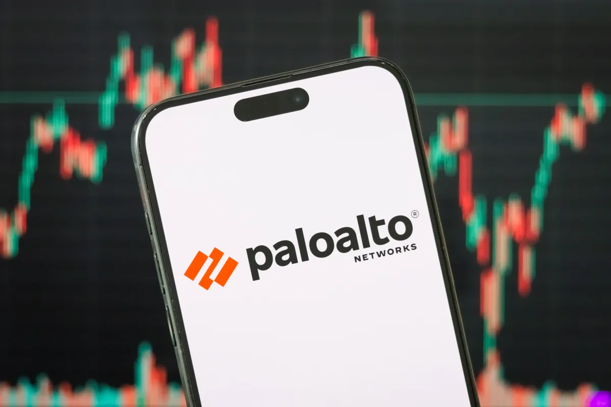

Palo Alto Networks ведёт переговоры о покупке израильского стартапа Clutch Security примерно за 500 млн долларов. Первой о сделке написала The Information, TechCrunch подтвердил информацию у своего источника. Ни Palo Alto Networks, ни Clutch комментарии не дали — отдельного официального анонса компаний нет, речь пока только о переговорах.
Clutch занимается, на первый взгляд, узкой, но быстро дорожающей нишей: учитывает пароли и коды аутентификации, которые выдаются не людям, а ИИ-агентам. У автономного агента может быть доступ к почте, репозиторию, банковским панелям и облачным консолям — и за каждым таким допуском стоит секрет, который никто толком не ведёт. Стартапу всего три года, в январе 2025-го он поднял 20 млн долларов в раунде Series A от Lightspeed и SignalFire при оценке 85 млн, а годовая повторяющаяся выручка сейчас лишь приближается к 10 млн долларов. Если сделка состоится, это около 50 годовых выручек — привычная для софтверного рынка, но смелая цена.
Для Palo Alto Networks это был бы уже седьмой acquisition в 2026 году (подсчёт PitchBook): в сентябре за те же 500 млн купили Console с ИИ-агентами для ИТ-поддержки, ранее — Chronosphere за 2,95 млрд, Embrace за 325 млн и Koi за 231 млн. Компании подкрепляют портфель быстрее, чем успевают строить внутри, — и причина названа прямо: рост атак с применением ИИ.
Гонка за такие компании идёт параллельно: Cyera, оценённая в этом году в 12 млрд долларов, завершила покупку Oasis Security с похожей специализацией (доступы агентов к системам) за 1 млрд, а Cisco купила Astrix примерно за 400 млн. Цена Clutch показывает: «не-human identities» из статьи для безопасности переехали в раздел бюджета, где за них выкладывают девятизначные суммы.
Что делать обычным пользователям и компаниям уже сейчас: относиться к агентам как к сотрудникам с собственными аккаунтами — минимальные права, срок жизни у токенов, журнал действий и возможность мгновенно отозвать доступ. Инструменты вроде покупаемых стартапов — это, по сути, промышленная версия той же гигиены.